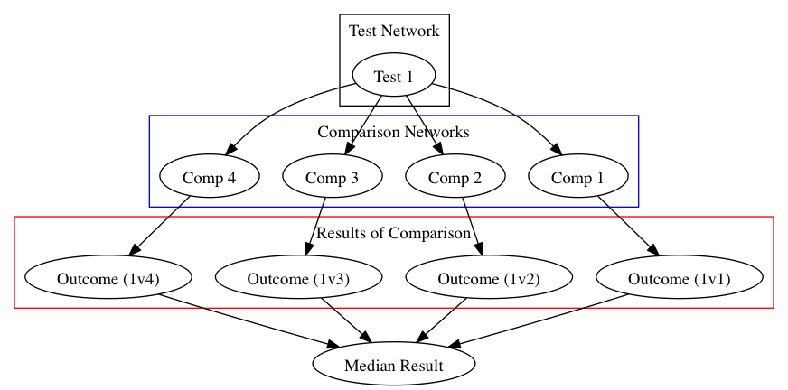
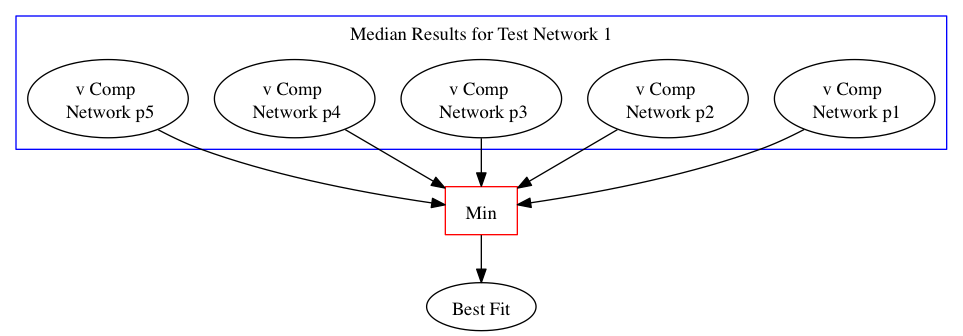
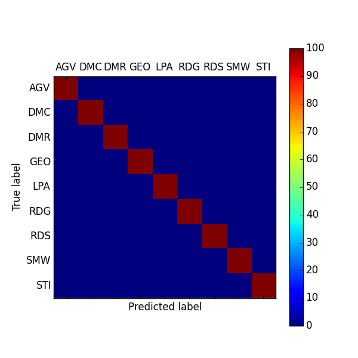
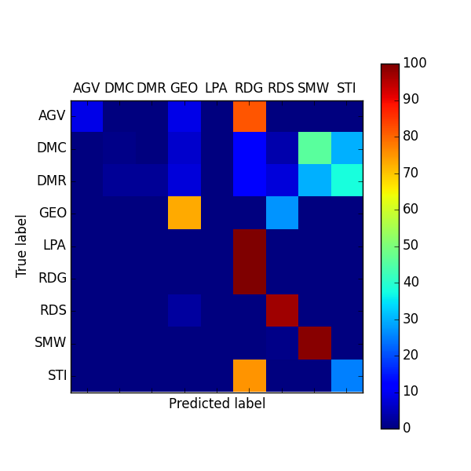
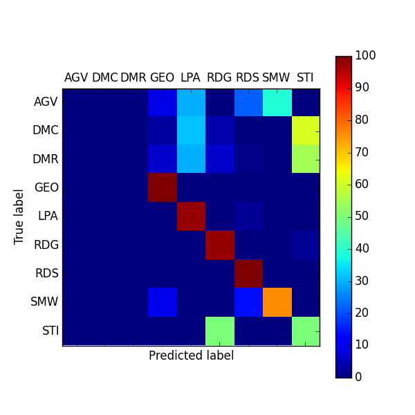
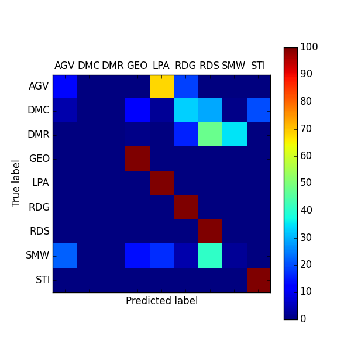
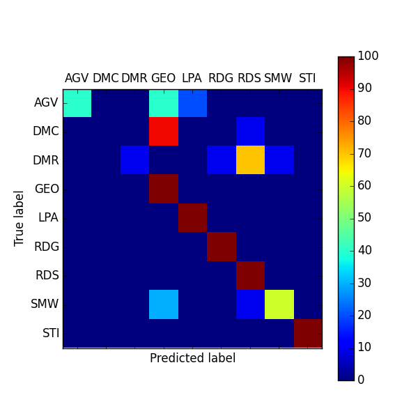
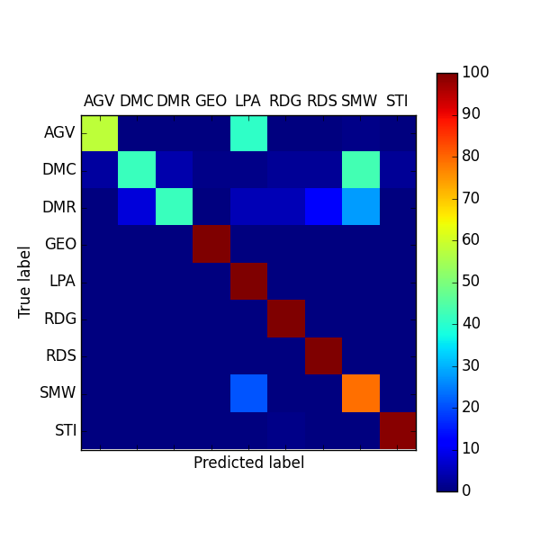
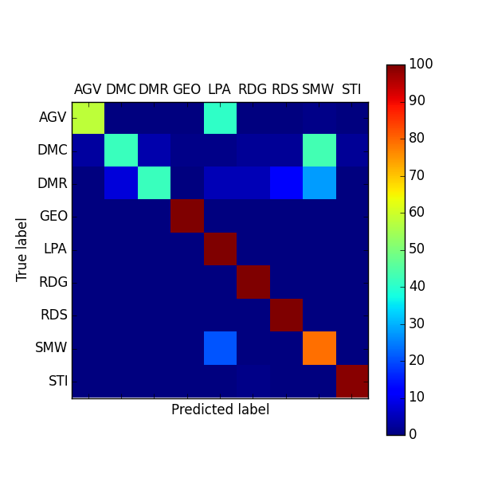

Evaluating the Accuracy and Efficiency of Complex Network Classification Algorithms
Margaret Bray, Vicki Hertzberg
Department of Biostatistics and Bioinformatics
Rollins School of Public Health
Emory University
Atlanta, GA 30322
November 24, 2014
Motivation
- What exactly does it mean to classify a network?
- To determine which model network most closely mimics the empirical network under investigation based upon some predefined set of network features or measures.
Empirical Networks
A network formed through observation of any real-world phenomena.
Computer Networks
- World Wide Web
- Internet
- Routers
Social and Public Health Netowkrs
- Friendships
- Sexual Relationships
- Twitter Followings
Biological and Molecular Networks
- Food web
- Metabolic
- Protein-protein interactions
- Neurological
Model Networks
A network not based directly on any real-world system, though potentially motivated by one.
These are built by following a prescribed algorithm, also referred to as a growth mechanism.
Model networks are either growing or static.
Examples of Model Networks
| Aging Vertex | AGV | Growing |
| Duplication-Mutation | DMC | Growing |
| -Complementation | ||
| Duplication-Mutation with | DMR | Growing |
| Random Mutation | ||
| 3D Geometric | GEO | Static |
| Linear Preferential Attachment | LPA | Growing |
| Random Growing | RDG | Growing |
| Random Static | RDS | Static |
| Small-World | SMW | Static |
| Stickiness Index | STICKY | Growing |
Why is network classification beneficial?
-
- Increase understanding of the phenomena being modeled
- Structure dictates functions
- Predict interactions
- Guide experiments
Classification Method Overview
- 5 classification methods considered
- Local properties
- Relative Graphlet Frequency (RGF)
- Graphlet Degree Distribution (GDD)
- Global properties
- Characteristic Curve (CC)
- Degree Distribution Distance (DDD)
- Mixture of properties
- Cross Scoring (CS)
Graphlets
Relative Graphlet Frequency
- Count graphlets
- Define distance:
$\mathcal{D}_{\mathcal{RGF}}=\displaystyle\sum\limits_{i=1}^{29}\left|F_{i}(\mathcal{G}_{1})-F_{i}(\mathcal{G}_{2})\right|$
where
$F_{i}(\mathcal{G}) = -log(N_{i}(\mathcal{G})/T(\mathcal{G}))$
$N_{i}=$ number of graphlets of type $i$
$T(\mathcal{G})=$ total number of graphlets
Graphlet Degree Distribution
- Count the distribution of each automorphism orbit
- Define agreement at a single automorphism orbit, $j$,:
$A^{j}(\mathcal{G}_{1},\mathcal{G}_{2}) = 1 - \frac{1}{\sqrt{2}}\left(\sum\limits_{k=1}^{\infty}\left[N_{\mathcal{G}_{1}}^{j}(k)-N_{\mathcal{G}_{2}}^{j}(k)\right]^{2}\right)^{1/2}$
where
$N_{\mathcal{G}}^{j}(k) = \frac{S_{\mathcal{G}}^{j}(k)}{T_{\mathcal{G}}^{j}}$
$S_{\mathcal{G}}^{j}(k)=$ number of nodes with automorphism orbit degree $k$, scaled by $k$
$T_{\mathcal{G}}^{j}=$ total number of automorphism orbit $j$
Graphlet Degree Distribution cont.
Arithmetic Mean:
$A_{arith}(\mathcal{G}_{1},\mathcal{G}_{2}) = \frac{1}{73}\sum\limits_{j=0}^{72}A^{j}(\mathcal{G}_{1},\mathcal{G}_{2})$
Geometric Mean:
$A_{geo}(\mathcal{G}_{1},\mathcal{G}_{2}) = \left(\frac{1}{73}\prod\limits_{j=0}^{72}A^{j}(\mathcal{G}_{1},\mathcal{G}_{2})\right)^{1/73}$
Characteristic Curve
Xianchuang Su et al., PLoS ONE, 6(5):e19784, May 2011., Fig. 1
Characteristic Curve cont.
- Create the characteristic curves.
- Define distance:
$\mathcal{D_{CC}(G}_{1},\mathcal{G}_{2})=\displaystyle\sum\limits_{X = s_{i}}^{\max\left(\bar{k_{1}},\bar{k_{2}}\right)}\left|\mathcal{CC}_{1}(X)-\mathcal{CC}_{2}(X)\right|\frac{1}{2\cdot \max\left(n_{1},n_{2}\right) }$ $\mathcal{CC}_{i}(X) = \left\lbrace \array{ Y/\bar{k}_{i}, & 0\le X \le T_{end,i}\cr X/\bar{k}_{i}, & T_{end,i} \lt X \le \bar{k}_{i}} \right. $
where
$s_{i} \in \mathcal{S}$ where $\mathcal{S}$ represents the ordered set of X values of the larger network
$T_{end,i}$: proportion of nodes in the giant component of network $i$
Degree Distribution Distance
- Calculate degree distribution
- Define distance:
$\mathcal{D_{G}(G}_{1},\mathcal{G}_{2})=\displaystyle\sum\limits_{k=k_{1}}^{k_{2}}\left|F_{k}(\mathcal{G}_{1})-F_{k}(\mathcal{G}_{2})\right|$
where
$F_{k}(\mathcal{G}) = -log(N_{k}(\mathcal{G})/S(\mathcal{G}))$
$k_{1}$ ($k_{2}$) = min (max) degree of networks
$N_{k}(\mathcal{G})=$ number of nodes with degree $k$
$S(\mathcal{G})=$ total number of nodes
Cross Scoring
- Select network measures of interest
- e.g. density, average degree
- Select model networks for comparison
- e.g. AGV, DMC, DMR
- Calculate measure median value for each type of model network
- density: AGV $=0.0017$, DMC $=0.039$, DMR $=0.004$
- Calculate measure value for empirical network
- median density = 0.0035
- Rank and score networks based on measure value distance from empirical value
- DMC $=1$, DMR $=2$, AGV $=3$
- Repeat steps 3 - 5 for all network measure and combine scores
- Network type with the smallest score is the best fit
Dataset
Saccharomyces cerevisiae PPI Network
- High-throughput dataset acquired from DIP Database
- Created through tandem-affinity purification (TAP) and mass spectrometry by Gavin et. al (2002)
- High efficiency, sensitivity, and specificity
- 1361 proteins (nodes)
- 3222 interactions (edges)
- No self-loops or lone nodes
Datasets
Model Network Simulations
- 1000 networks of each type
- AGV, DMC, DMR, LPA, RDG, RDS, and SMW from Middendorf (2005) source code
- GEO and STICKY from GraphCrunch
- Required input values, i.e. number of nodes, edges, etc, based off of S. cerevisiae PPI network values
- Lone nodes were eliminated
- Consistent across literature
Classification Algorithm Validation
Classification Algorithm Validation cont.
-

Results
Perfect Matching Matrix
Matching Matrices
    

DDD Matching Matrix
CCC Matching Matrix
RGF Matching Matrix
GDD (Arithmetic Mean) Matching Matrix
GDD (Geometric Mean) Matching Matrix
Cross Scoring Matching Matrix
% Correctly Classified
- Degree Distribution Distance: 45%
- Characteristic Curve: 58%
- Relative Graphlet Frequency: 57%
- Graphlet Degree Distribution (Arithmetic): 68%
- Graphlet Degree Distribution (Geometric): 60%
- Cross Scoring: 81%
Method Pros and Cons
Degree Distribution Distance
- Pros: second fastest, no network size limits
- Cons: worst method validation results, outcomes not normalized
Characteristic Curve
- Cons: slow, computationally intensive, outcomes not normalized, requires connected network, results dependent on starting node
Relative Graphlet Frequency
- Pros: medium speed
- Cons: upper limit of 50,000 edges, outcomes not normalized
Method Pros and Cons cont.
Graphlet Degree Distribution
- Pros: normalized outcomes
- Cons: upper limit of 50,000 edges, extremely slow, very computationally intensive
Cross Scoring
- Pros: fastest, can be personalized, least computationally intensive
- Cons: poor classification of DMC and DMR networks
Conclusions
- Overall poor classification
- Lots of potential
- Difficult time classifying DMC and DMR
- Find identifying features